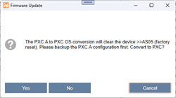

Converting PXC.A device to PXC4/5/7 device
If there is a requirement to replace existing PXC.A installations with PXC4/5/7 devices, this can be easily done with a firmware update. However, it should be noted that the existing PXC.A control program and point database will be deleted and cannot be reused. The point database must be re-engineered, and the control program must be rewritten with the PXC4/5/7 library and newly commissioned.
Influence on Desigo CC:
Due to the assignment of new BACnet IDs during re-engineering, the assignments in the existing graphic pages must be re-created. Graphic objects with multiple data points, for example fan, must be created with the current PXC4/5/7 graphics library. The new BACnet IDs also mean that existing log data and trend data can no longer be used. Use the Desigo CC Data Migration Tool to map the existing PXC.A data to the new PXC4/5/7 data structure.
Supported device conversion:
- PXC4.E16.A -> PXC4.E16-2
- PXC5.E24.A -> PXC5.E24
- PXC7.E400.A -> PXC7.E400L
Unsupported device conversion:
- PXC4.E16.A to PXC4.M16, PXC4.E16S, PXC4.M16S
- PXC7.E400.A to PXC7.E400S or PXC7.E400M
- PXC5.E003

A device that has been converted from an PXC.A to an PXC4/5/7 device can no longer be changed back into an PXC.A device.
1. Backup of the existing control program
To ensure the traceability of the existing system, the following steps must be carried out:
- Uploading the device configuration and control program for each device.
Uploading a device configuration - Uploading of the runtime instance data for each device.
Uploading runtime instance data - Backup the project.
Archiving projects - Printing out all PXC.A data for the PXC4/5/7 re-engineering.
2. Device conversion
- A device conversion can only be carried out with ABT Site.
- Go to Startup.
- Open the Configure and download task.
- Select the Engineered devices or Discovered devices tab.
- In the Engineered devices tab, right-click the building or device to be updated and select Load > Firmware.
- In the Discovered devices tab, right-click the device to be updated and select Firmware.
- Select the Browse tab
- The Update firmware dialog box opens.

- Click Browse to locate the firmware source file.
- Select a firmware file (.fmwz) and click Open.
- Click OK.
- The Firmware update dialog box displays.

Notes:
- Clear device resets the device to its factory settings.
More information, see Configure and download
- Once a conversion has been started, it can no longer be cancelled. - Click Yes.
- The device firmware is updated. The update process may take a while. Wait for the device to restart.
- Start with the PXC4/5/7 engineering in ABT Site.
- Use the Desigo CC Data Migration Tool to re-engineer the existing Desigo CC data with the new data structure of PXC4/5/7. The Desigo CC Data Migration Tool supports the migration of:
- Graphics
- Reaction
- Macro
- Document
- Schedule
- Report
- Advanced reports
- Trend calculation reports
- PBI reports